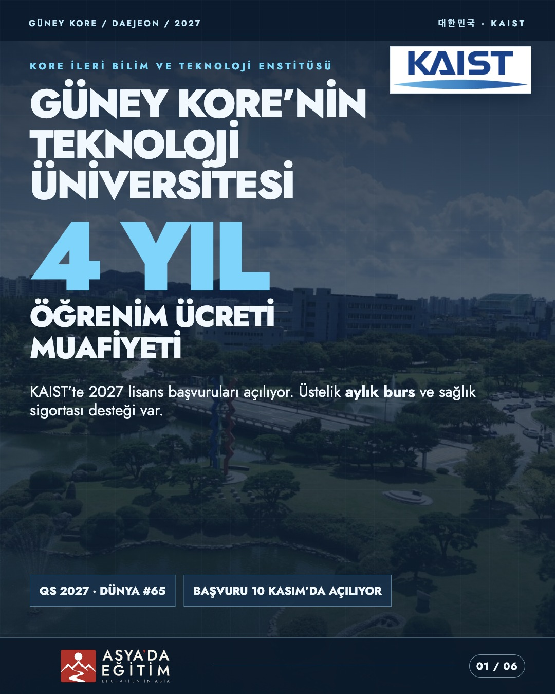
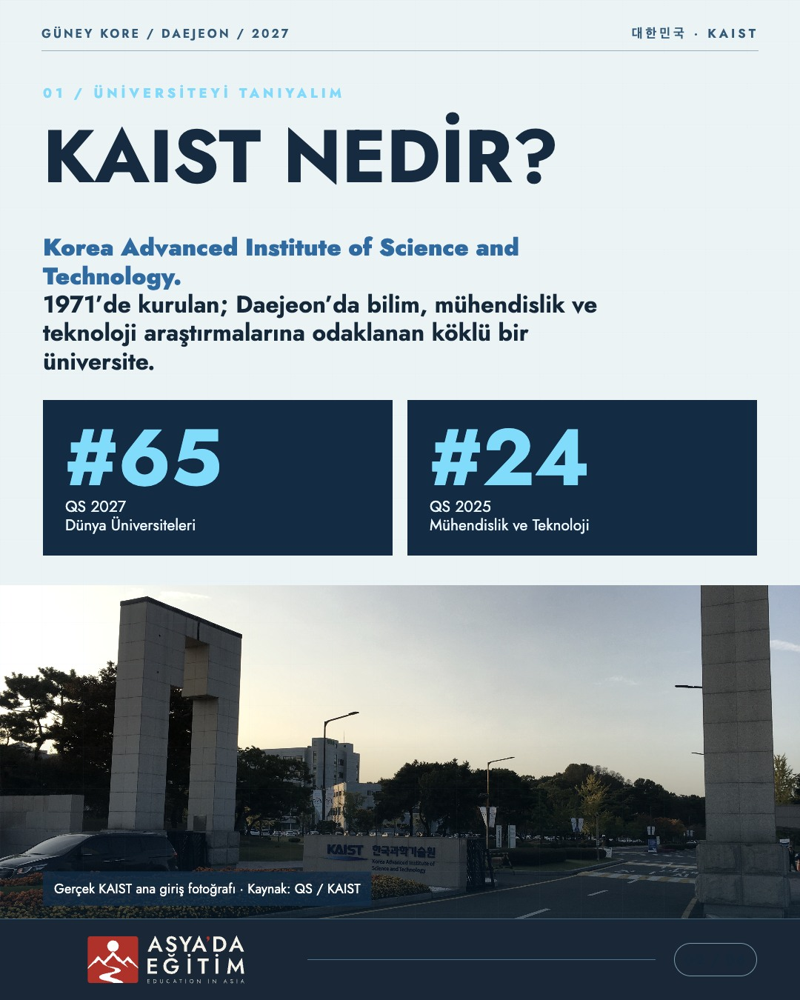
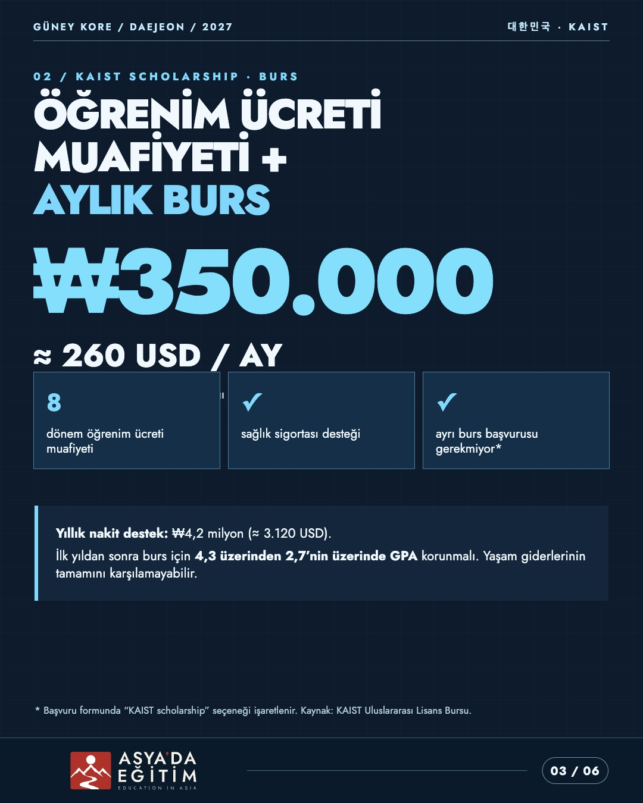
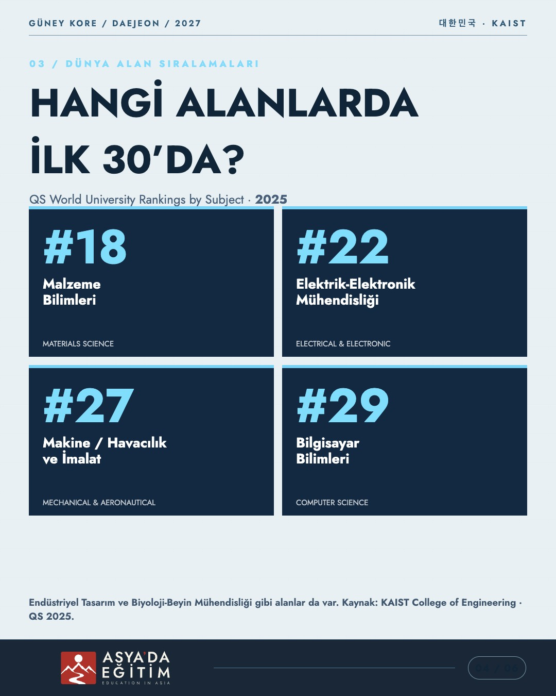
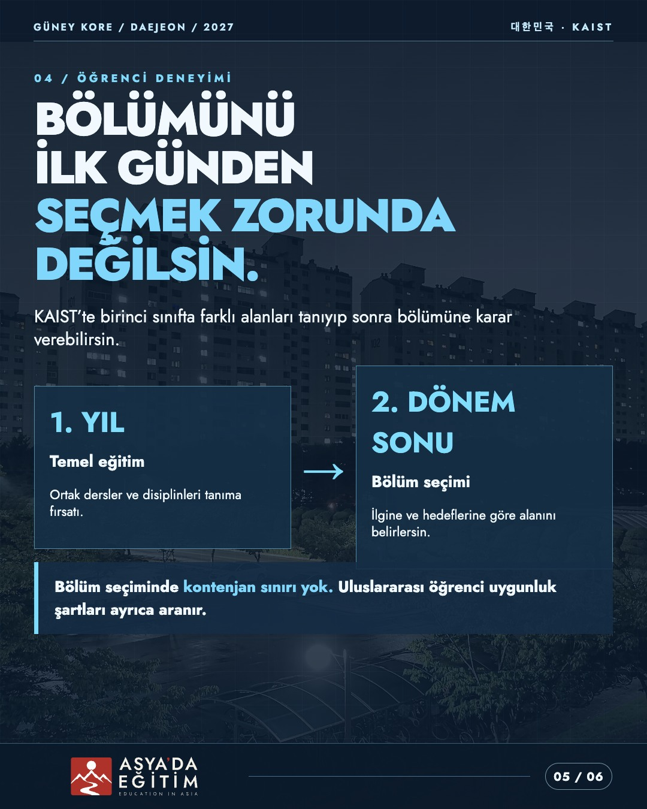
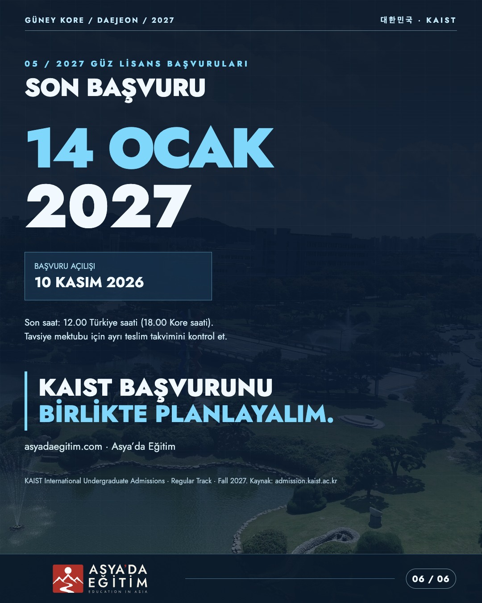

01 / 06Düzenlenebilir kaynak
Güney Kore'nin bilim ve teknoloji üniversitesi KAIST: burslar, dünya sıralamaları, bölümler ve 2027 lisans başvuru takvimi. Gerçek KAIST kampüs fotoğrafları, ilk slaytta özgün KAIST logosu, düzenlenebilir Jost tipografisi ve Asya'da Eğitim'in H-02 tam marka imzası.






Manifest · Fotoğraf kaynakları · Doğrulanan bilgiler · Paylaşım metni
KAIST logosu yalnızca okulun tanıtılması içindir; KAIST bu çalışmanın resmî ortağı değildir. KAIST resmî UI koşulları ticari kullanıma sınırlamalar getirdiğinden, sosyal yayın öncesi kullanım izni doğrulanmalıdır. Bu sayfa resmî üniversite duyurusu değildir. Görseller gerçek kampüs fotoğrafları; bölüm bazlı laboratuvar fotoğrafı olarak yanlış etiketlenmemiştir. Sosyal medya yayını yapılmamıştır.